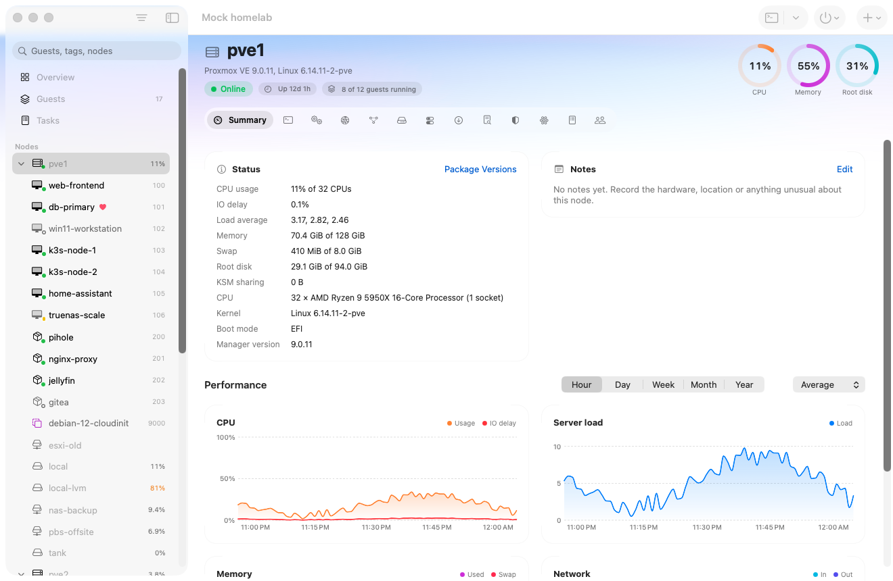
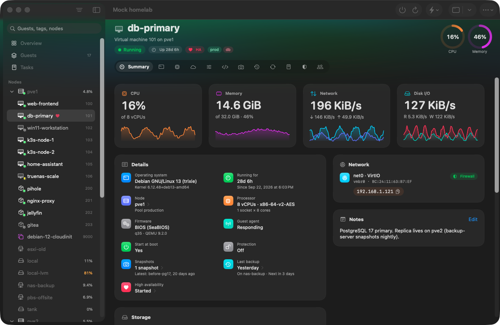

Every task, in view
INFO: starting new backup job: vzdump 101 --storage nas-backup --mode snapshot --compress zstd INFO: Starting Backup of VM 101 (qemu) INFO: status = running INFO: creating vzdump archive 'vzdump-qemu-101-2026_10_21-02_00_04.vma.zst' INFO: 41% (13.1 GiB of 32.0 GiB) in 12s, read: 1.1 GiB/s, write: 402.0 MiB/s
The web UI, in a sidebar
It looks like it belongs
Liquid Glass, the menu bar, your accent colour and your light or dark setting. Proxima follows the Mac, not the browser.


Checked against Proxmox itself
Every API call the app makes is compared with the schema a Proxmox server publishes. Against Proxmox VE 9.2, all of them match.
API calls, every one matching the server's own description.
Nodes and disks
Datacenter
Access
Guests and storage
Run it yourself: Tools/apicheck.sh reads the public API description from any node, no sign-in needed.
Connected in a minute
First, the address you use for the web UI.
Then check its certificate, once.
Then sign in as yourself, with two-factor if you use it.
And the whole cluster is on your Mac.
Questions
Why does macOS say it can't verify Proxima?
This build is signed but not yet notarized by Apple, so macOS stops it the first time. Click Done, open System Settings → Privacy & Security, scroll down and click Open Anyway next to the Proxima message. You only do this once.
From Terminal, xattr -dr com.apple.quarantine /Applications/Proxima.app does the same.
Which Macs and which Proxmox versions?
Any Mac on macOS 26 Tahoe or later, Intel or Apple silicon. It's built and tested against Proxmox VE 9.2, and talks to the same API the web UI uses, on port 8006.
Where does my password go?
Only to your server. If you tick Save in Keychain it's stored in your Mac's own Keychain. Proxima has no account, no analytics and no server of its own.
Do I need to install anything on the server?
No. Proxima uses the standard Proxmox API. It checks the server's certificate fingerprint the first time you connect and warns you if it ever changes.
Can I use API tokens or two-factor?
Yes: API tokens, authenticator apps, Yubico OTP and recovery keys all work. Security keys (WebAuthn) only work in a browser, so use another factor for Proxima. Consoles need a password sign-in, as in the web UI.
Is it free?
Yes, and open source under the MIT license. The code is on GitHub, where you can also report problems.
Is it made by Proxmox?
No. Proxima is an independent project and isn't affiliated with or endorsed by Proxmox Server Solutions GmbH.
Then open Proxima, choose Add Server and enter your server's address. Version 1.0, 11 MB, for macOS 26.